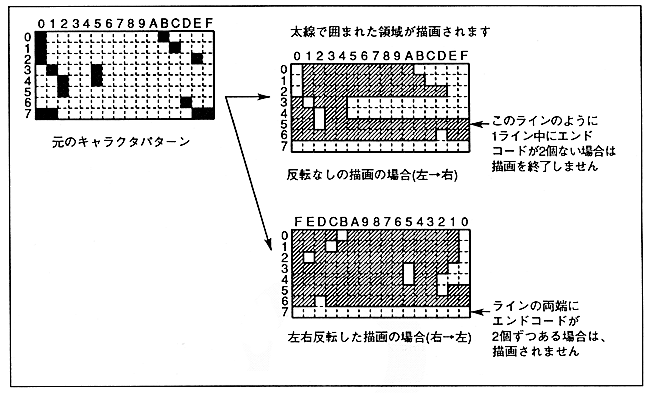
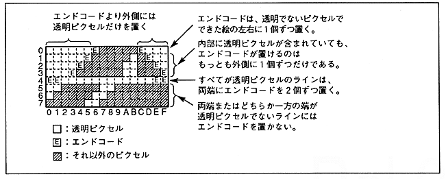

Figure 6.10 (a) End code processing (1)

¡Please place only transparent pixels outside the end code so that they will not be drawn when read from either the left or right side. Therefore, be sure to set SPD = 0 when ECD = 0. Do not use the combination of ECD = 0 and SPD = 1.
* Drawing direction may be reversed by pre-clipping.
When using an end code for the original picture, please use it as follows.
Figure 6.10 (b) End code processing (2)
